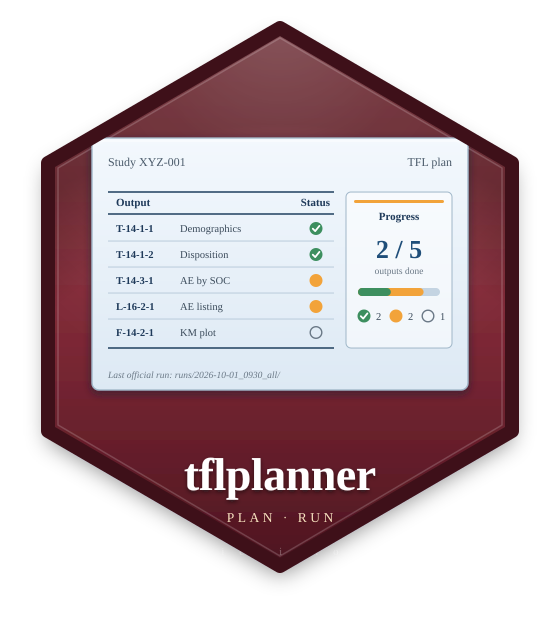

Try one of a study's (or the company's) ARD functions
Source:R/ard_own_ui.R
try_ard_function.RdIn a separate R process, so a function that hangs or fails does not stop
the app: loads the R files the study's ARD programs load (source, in
their order; the company's file too when the study does not have the
function), reads the data (a dataset of the ARD definition, of an
analysis set; cards::ADSL when none is given), and runs
tflspec::tfl_check_ard_function() with args as an analysis row would
give them. The result is kept (programs/ard/functions/.checks.json).
Usage
try_ard_function(
study,
name,
dataset = NA_character_,
population_id = NA_character_,
args = "",
home = tflplanner_home(),
timeout = 60
)Arguments
- study
An
rtfstudy.- name
The function.
- dataset, population_id
The data: a dataset of the ARD definition and an analysis set (either may be
NA); bothNA:cards::ADSL.- args
Its arguments as R (
"by = TRT01A, variables = AGE").- home
The tflplanner home.
- timeout
Seconds to allow.